Static rest geometry and source inventory. These images are not physics results. All displayed dimensions use metres. Smoke scenes can apply a different declared scale, pose, and material. Use each scene manifest for its simulated dimensions.
Full manifest and license notices · Helper API and limits
Garments use welded panel seams with open cuffs, hems, necks, and armholes. Bags have sewn bottoms, open rims, and attached handles. Material presets are synthetic. They do not represent measured cotton, denim, or rubber.
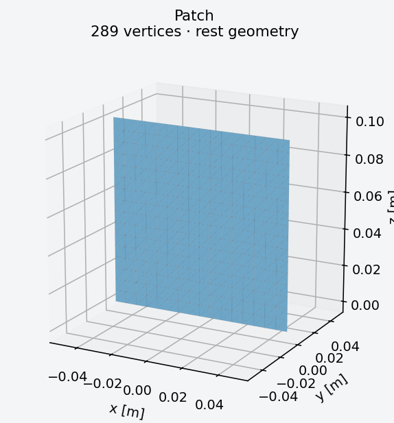
0.100 × 0.000 × 0.100 m (x × y × z)
289 vertices · 512 triangles
single rectangular cloth panel.
original procedural benchmark geometry · Apache-2.0
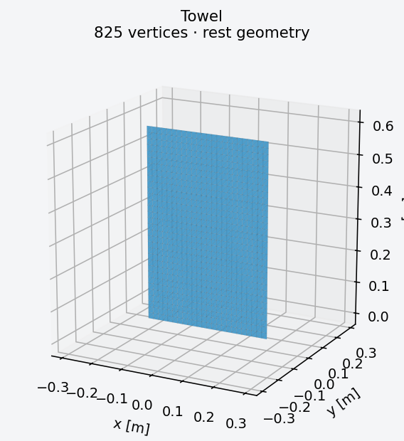
0.400 × 0.000 × 0.600 m (x × y × z)
825 vertices · 1,536 triangles
single rectangular cloth panel.
original procedural benchmark geometry · Apache-2.0
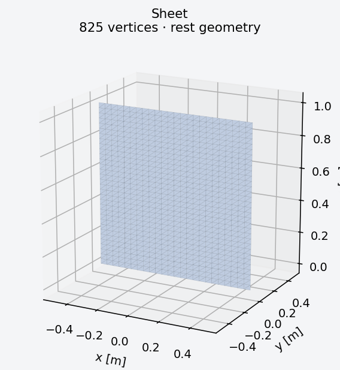
1.000 × 0.000 × 1.000 m (x × y × z)
825 vertices · 1,536 triangles
single rectangular cloth panel.
original procedural benchmark geometry · Apache-2.0
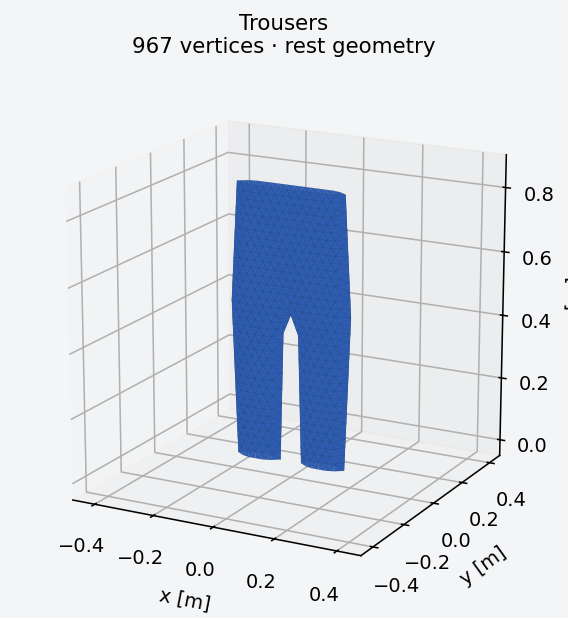
0.400 × 0.050 × 0.850 m (x × y × z)
967 vertices · 1,884 triangles
two original cut panels, welded seam vertices, unsewn openings.
original procedural benchmark geometry · Apache-2.0
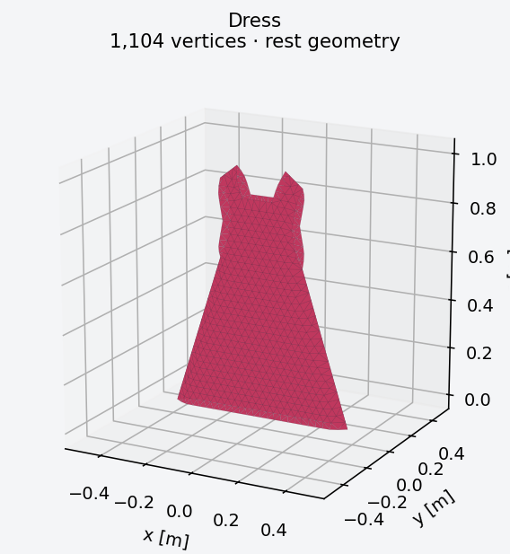
0.760 × 0.070 × 1.000 m (x × y × z)
1,104 vertices · 2,084 triangles
two original cut panels, welded seam vertices, unsewn openings.
original procedural benchmark geometry · Apache-2.0
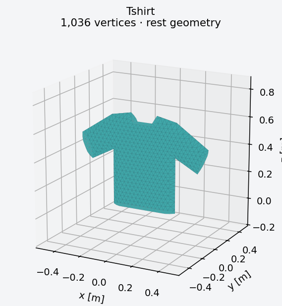
0.980 × 0.070 × 0.680 m (x × y × z)
1,036 vertices · 1,994 triangles
two original cut panels, welded seam vertices, unsewn openings.
original procedural benchmark geometry · Apache-2.0
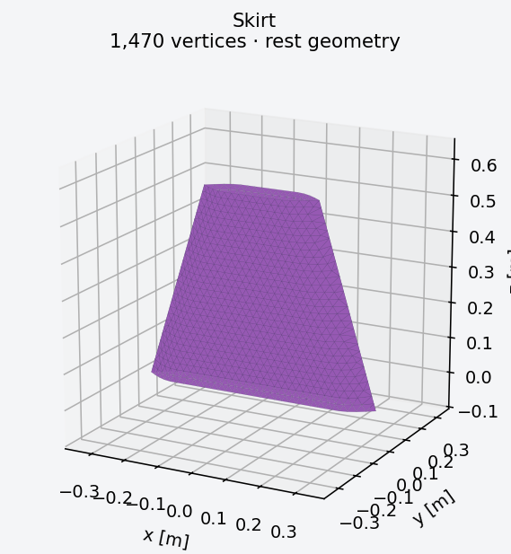
0.680 × 0.090 × 0.550 m (x × y × z)
1,470 vertices · 2,844 triangles
two original cut panels, welded seam vertices, unsewn openings.
original procedural benchmark geometry · Apache-2.0
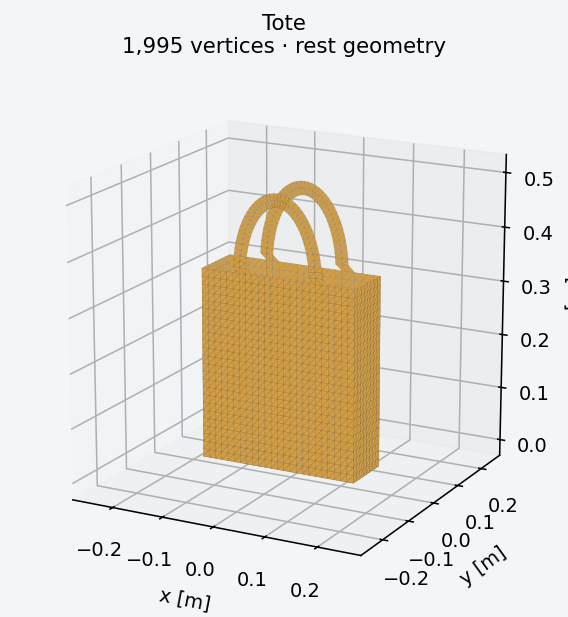
0.300 × 0.100 × 0.502 m (x × y × z)
1,995 vertices · 3,776 triangles
welded front, back, side and bottom panels; open rim; rim-attached handle strips.
original procedural benchmark geometry · Apache-2.0
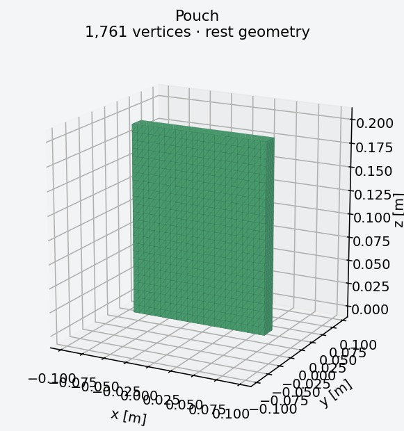
0.150 × 0.018 × 0.200 m (x × y × z)
1,761 vertices · 3,456 triangles
welded front, back, side and bottom panels; open rim; rim-attached handle strips.
original procedural benchmark geometry · Apache-2.0
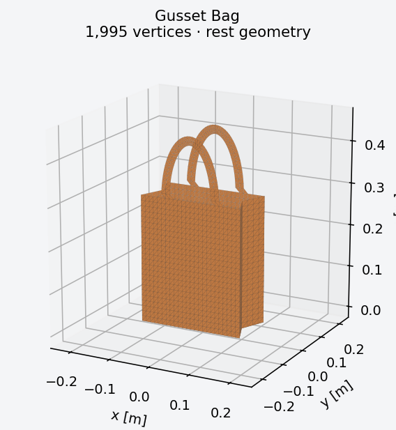
0.250 × 0.120 × 0.450 m (x × y × z)
1,995 vertices · 3,776 triangles
welded front, back, side and bottom panels; open rim; rim-attached handle strips.
original procedural benchmark geometry · Apache-2.0
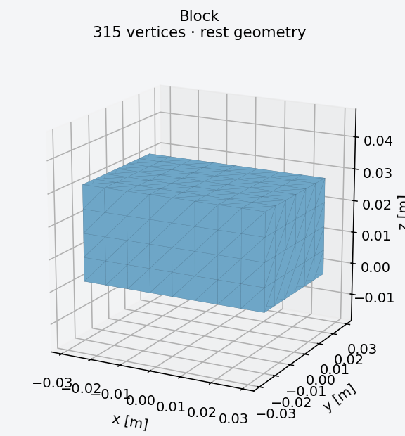
0.060 × 0.040 × 0.030 m (x × y × z)
315 vertices · 416 triangles · 1,152 tetrahedra
structured hexahedral grid split into six conforming tetrahedra per cell.
original procedural benchmark geometry · Apache-2.0
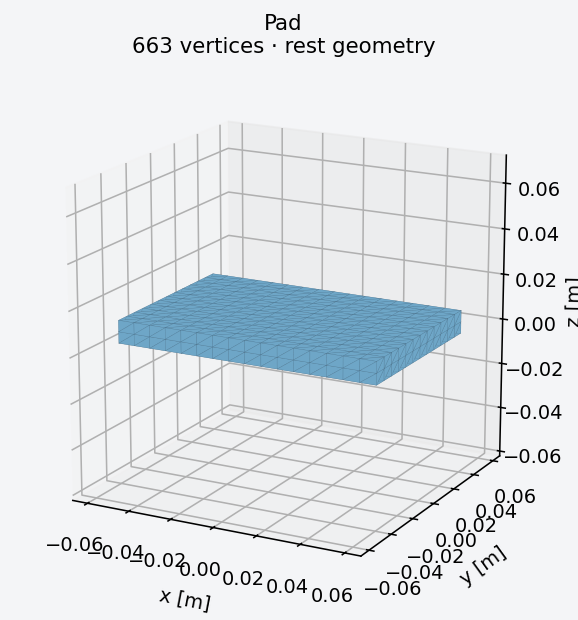
0.120 × 0.080 × 0.010 m (x × y × z)
663 vertices · 992 triangles · 2,304 tetrahedra
structured hexahedral grid split into six conforming tetrahedra per cell.
original procedural benchmark geometry · Apache-2.0
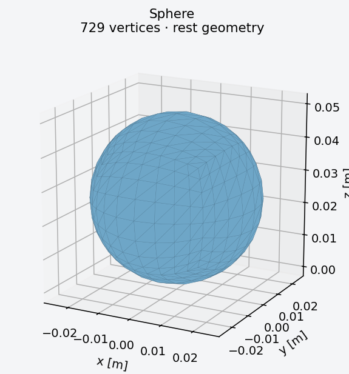
0.050 × 0.050 × 0.050 m (x × y × z)
729 vertices · 768 triangles · 3,072 tetrahedra
cube grid radially mapped to sphere.
original procedural benchmark geometry · Apache-2.0
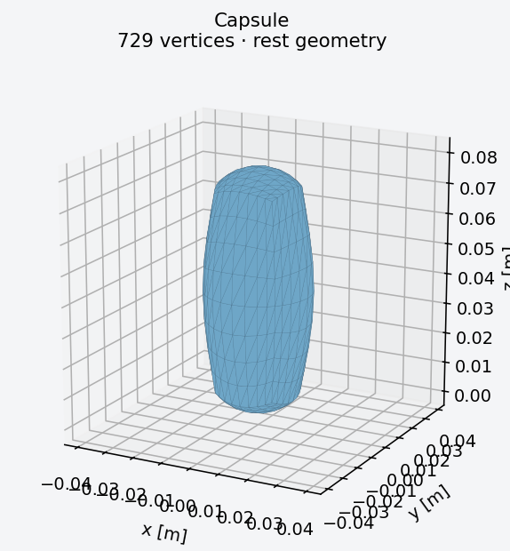
0.035 × 0.035 × 0.080 m (x × y × z)
729 vertices · 768 triangles · 3,072 tetrahedra
cube grid radially mapped to sphere and axially stretched to a rounded capsule surrogate.
original procedural benchmark geometry · Apache-2.0
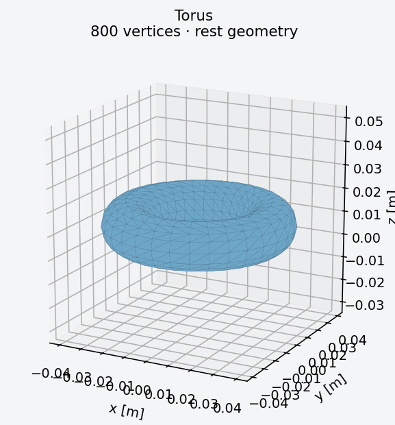
0.080 × 0.080 × 0.020 m (x × y × z)
800 vertices · 1,024 triangles · 3,072 tetrahedra
periodic swept disk grid with major radius 0.03 m and tube radius 0.01 m.
original procedural benchmark geometry · Apache-2.0
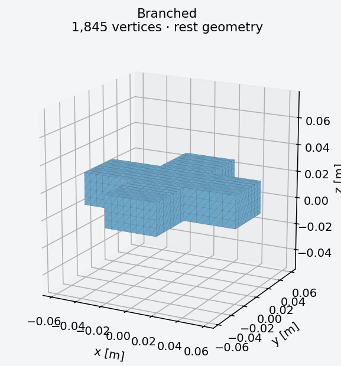
0.120 × 0.120 × 0.024 m (x × y × z)
1,845 vertices · 2,048 triangles · 7,680 tetrahedra
original four-arm cross, rectangular arms; conforming union of voxel cells.
original procedural benchmark geometry · Apache-2.0
Robot images use imported geometry and forward kinematics at the source rest pose. Garment images show authored source meshes. A preview does not establish a working grasp, a controller, or a Style3D-to-VBD material mapping. The Franka source contains the FR3 arm and hand.
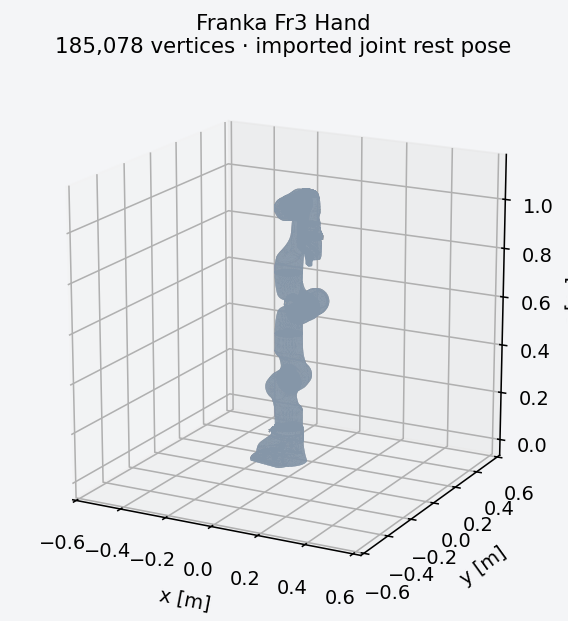
0.325 × 0.259 × 1.115 m (x × y × z)
185,078 vertices · 240,624 triangles
imported joint rest pose.
Source · Apache-2.0
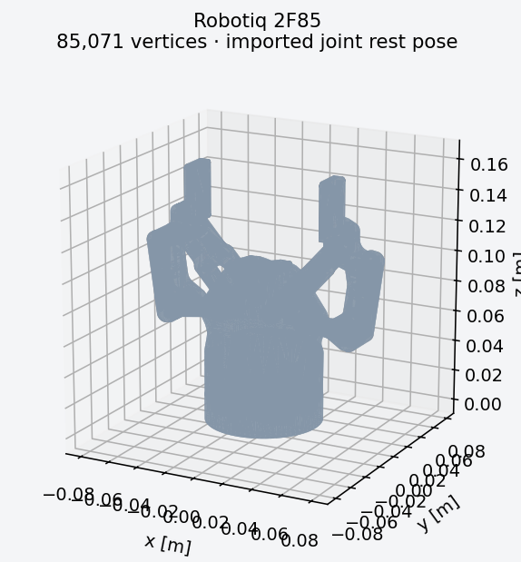
0.155 × 0.075 × 0.162 m (x × y × z)
85,071 vertices · 170,282 triangles
imported joint rest pose.
Source · BSD-2-Clause
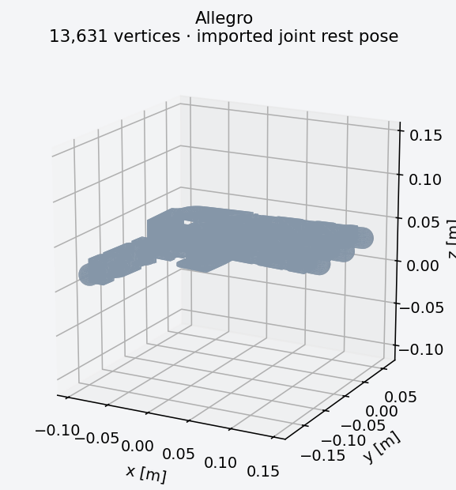
0.246 × 0.247 × 0.042 m (x × y × z)
13,631 vertices · 27,258 triangles
imported joint rest pose.
Source · BSD-2-Clause
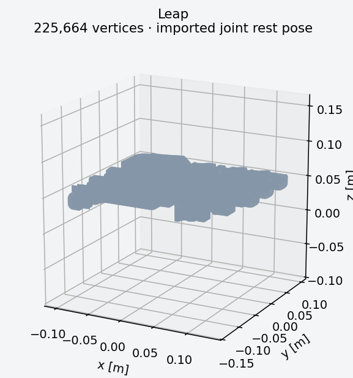
0.233 × 0.240 × 0.063 m (x × y × z)
225,664 vertices · 454,234 triangles
imported joint rest pose.
Source · MIT
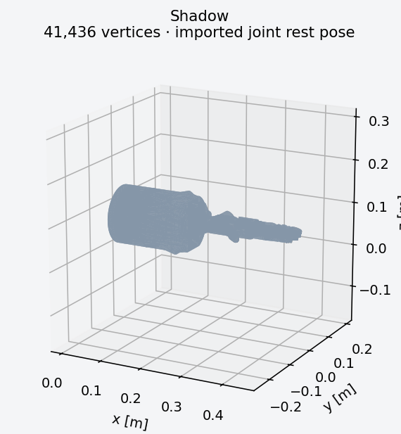
0.448 × 0.181 × 0.135 m (x × y × z)
41,436 vertices · 57,736 triangles
imported joint rest pose.
Source · Apache-2.0
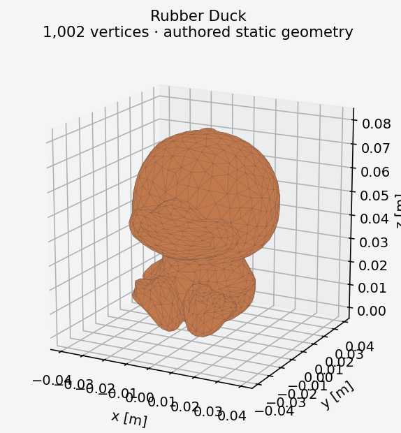
0.062 × 0.055 × 0.080 m (x × y × z)
1,002 vertices · 2,000 triangles
authored static geometry.
Source · Apache-2.0
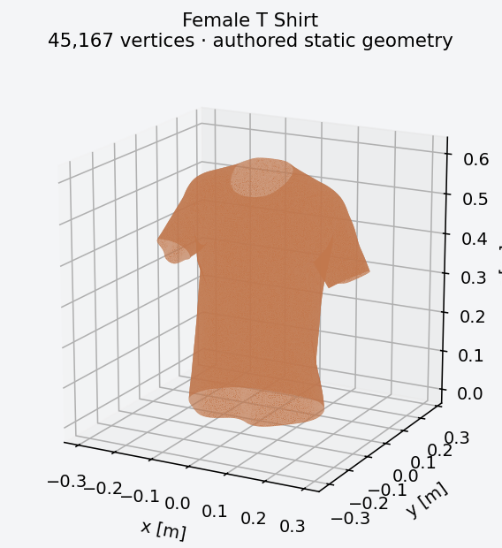
0.561 × 0.265 × 0.605 m (x × y × z)
45,167 vertices · 89,912 triangles
authored static geometry.
Source · BSD-3-Clause
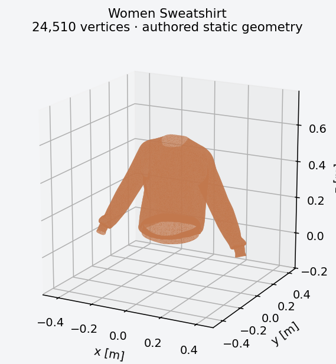
0.881 × 0.288 × 0.580 m (x × y × z)
24,510 vertices · 48,824 triangles
authored static geometry.
Source · BSD-3-Clause
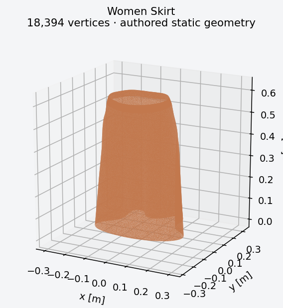
0.428 × 0.287 × 0.621 m (x × y × z)
18,394 vertices · 36,538 triangles
authored static geometry.
Source · BSD-3-Clause
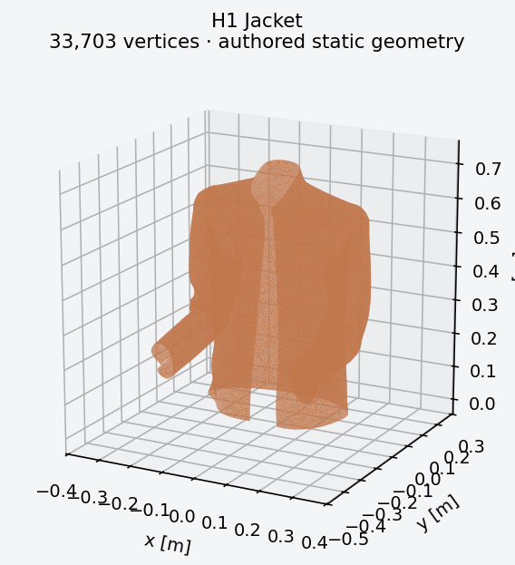
0.560 × 0.444 × 0.723 m (x × y × z)
33,703 vertices · 66,930 triangles
authored static geometry.
Source · BSD-3-Clause
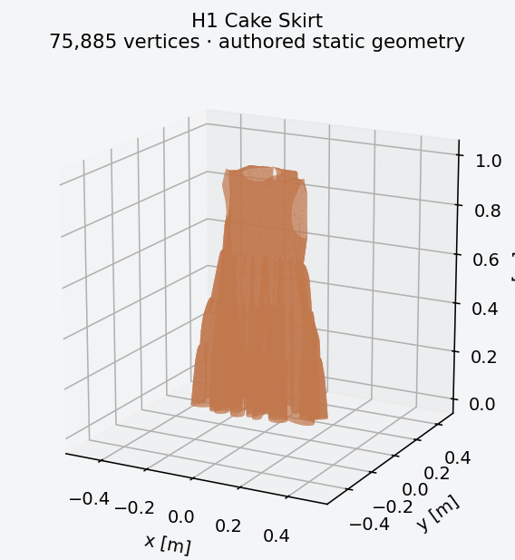
0.540 × 0.344 × 0.999 m (x × y × z)
75,885 vertices · 151,013 triangles
authored static geometry.
Source · BSD-3-Clause
These meshes are separate from original geometry. Metadata records preprocessing, topology checks, source notices, and remaining quality limits.
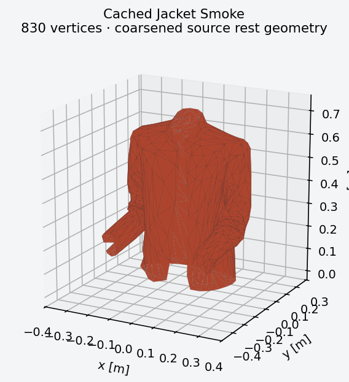
0.560 × 0.441 × 0.719 m (x × y × z)
830 vertices · 1,599 triangles
coarsened source rest geometry.
Source · BSD-3-Clause
The local LIDO / TetWild / Thingi10K subset, bunny, and octopus have not been copied. Individual source identities or reuse terms remain unresolved. Original primitives and the four-arm cross provide traceable coverage.